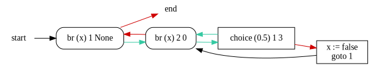

probably.pgcl¶
This module implements pGCL parsing, type-checking, and transformations of pGCL programs. The most important modules are the two below:
probably.pgcl.compiler. Functions that do parsing and type-checking all at once.probably.pgcl.ast. The abstract syntax tree (AST) with all its types that define it.
It is also possible to calculate weakest pre-expectations of programs (see probably.pgcl.wp) for some specific types of programs.
>>> from probably.pgcl.compiler import compile_pgcl
>>> code = '''# this is a comment
... # A program starts with the variable declarations.
... # Every variable must be declared.
... # A variable is either of type nat or of type bool.
... bool f;
... nat c; # optional: provide bounds for the variables. The declaration then looks as follows: nat c [0,100]
...
... # Logical operators: & (and), || (or), not (negation)
... # Operator precedences: not > & > ||
... # Comparing arithmetic expressions: <=, <, ==
...
... skip;
...
... while (c < 10 & f) {
... {c := unif(1,10)} [0.8] {f:=true}
... }'''
>>> compile_pgcl(code)
Program(variables={'f': BoolType(), 'c': NatType(bounds=None)}, constants={}, instructions=[SkipInstr(), WhileInstr(cond=BinopExpr(operator=Binop.AND, lhs=BinopExpr(operator=Binop.LE, lhs=VarExpr('c'), rhs=NatLitExpr(10)), rhs=VarExpr('f')), body=[ChoiceInstr(prob=FloatLitExpr("0.8"), lhs=[AsgnInstr(lhs='c', rhs=UniformExpr(start=NatLitExpr(1), end=NatLitExpr(10)))], rhs=[AsgnInstr(lhs='f', rhs=BoolLitExpr(True))])])])
For more details on what syntax is accepted for pGCL programs, you can view the formal grammar used for the pGCL parser.
Compiler Frontend¶
This module provides an API that combines parsing and type-checking all at once. It is just a thin wrapper around the parser, type-checker, and constant substitution.
Refer to probably.pgcl.parser and probably.pgcl.check for the parser and type-checker respectively.
Variable/constant substituion is implemented in probably.pgcl.substitute.
If you want them, linearity checks live in probably.pgcl.syntax.
-
probably.pgcl.compiler.compile_pgcl(code, *, substitute_constants=True)[source]¶ Parse and type-check a pGCL program.
>>> compile_pgcl("nat x; nat y; x := y") Program(variables={'x': NatType(bounds=None), 'y': NatType(bounds=None)}, constants={}, instructions=[AsgnInstr(lhs='x', rhs=VarExpr('y'))]) >>> compile_pgcl("x := y") CheckFail(location=..., message='x is not a variable.')
-
probably.pgcl.compiler.compile_expr(program, code, *, substitute_constants=True)[source]¶ Parse and type-check an expression.
- Parameters
- Return type
Union[VarExpr,BoolLitExpr,NatLitExpr,FloatLitExpr,UnopExpr,BinopExpr,UniformExpr,CategoricalExpr,SubstExpr,TickExpr,CheckFail]
-
probably.pgcl.compiler.compile_expectation(program, code, *, substitute_constants=True)[source]¶ Parse and type-check an expectation.
- Parameters
- Return type
Union[VarExpr,BoolLitExpr,NatLitExpr,FloatLitExpr,UnopExpr,BinopExpr,UniformExpr,CategoricalExpr,SubstExpr,TickExpr,CheckFail]
AST¶
All data types to represent a pGCL program.
Note
For our AST types, most “sum types” have a normal Python superclass (e.g. TypeClass for types), but also a Union type (e.g. Type).
Prefer using the Union type, as it allows for exhaustiveness checking by mypy.
In some rare cases, it’s necessary to tell mypy that an object of a superclass type is actually in the respective union.
Use cast methods, e.g. InstrClass.cast() to go from InstrClass to Instr.
Also note that isinstance checks must be done against the superclasses, because Python’s Union does not yet work with isinstance.
Program¶
-
class
probably.pgcl.ast.Program(declarations, variables, constants, instructions)[source]¶ A pGCL program has a bunch of variables with types, constants with defining expressions, and a list of instructions.
- Parameters
variables (
Dict[str,Union[BoolType,NatType,FloatType]]) –constants (
Dict[str,Union[VarExpr,BoolLitExpr,NatLitExpr,FloatLitExpr,UnopExpr,BinopExpr,UniformExpr,CategoricalExpr,SubstExpr,TickExpr]]) –instructions (
List[Union[SkipInstr,WhileInstr,IfInstr,AsgnInstr,ChoiceInstr,TickInstr]]) –
-
__str__()[source]¶ Convert this program to corresponding source code in pGCL.
>>> from .parser import parse_pgcl >>> program = parse_pgcl("nat x; nat y; while (x < 2) {}") >>> print(program) nat x; nat y; while (x < 2) { }
- Return type
-
declarations: List[Union[probably.pgcl.ast.VarDecl, probably.pgcl.ast.ConstDecl]]¶ The original list of declarations.
-
variables: Dict[str, Union[probably.pgcl.ast.BoolType, probably.pgcl.ast.NatType, probably.pgcl.ast.FloatType]]¶ A dict of variables to their type. Only valid if the declarations are well-typed.
-
constants: Dict[str, Union[probably.pgcl.ast.VarExpr, probably.pgcl.ast.BoolLitExpr, probably.pgcl.ast.NatLitExpr, probably.pgcl.ast.FloatLitExpr, probably.pgcl.ast.UnopExpr, probably.pgcl.ast.BinopExpr, probably.pgcl.ast.UniformExpr, probably.pgcl.ast.CategoricalExpr, probably.pgcl.ast.SubstExpr, probably.pgcl.ast.TickExpr]]¶ A dict of constant names to their defining expression. Only valid if the declarations are well-typed.
-
instructions: List[Union[probably.pgcl.ast.SkipInstr, probably.pgcl.ast.WhileInstr, probably.pgcl.ast.IfInstr, probably.pgcl.ast.AsgnInstr, probably.pgcl.ast.ChoiceInstr, probably.pgcl.ast.TickInstr]]¶
-
add_variable(var, typ)[source]¶ Add a new variable declaration to the program’s list of declarations and to the dict of variables.
-
to_skeleton()[source]¶ Return a (shallow) copy of this program with just the declarations, but without any instructions.
>>> from .parser import parse_pgcl >>> program = parse_pgcl("nat x; nat y; while (x < 2) {}") >>> program.to_skeleton() Program(variables={'x': NatType(bounds=None), 'y': NatType(bounds=None)}, constants={}, instructions=[])
- Return type
Types¶
-
probably.pgcl.ast.Type= typing.Union[probably.pgcl.ast.BoolType, probably.pgcl.ast.NatType, probably.pgcl.ast.FloatType][source]¶ Union type for all type objects. See
TypeClassfor use with isinstance.
-
class
probably.pgcl.ast.NatType(bounds)[source]¶ Natural number types with optional bounds.
Bounds are only preserved for variables. Values of bounded types are considered as unbounded until they are assigned to a bounded variable. That is to say, bounds are lost in expressions such as in the example below:
>>> from .parser import parse_pgcl, parse_expr >>> from .check import get_type >>> program = parse_pgcl("nat x [1,5]") >>> get_type(program, parse_expr("x + 5")) NatType(bounds=None)
-
bounds: Optional[probably.pgcl.ast.Bounds]¶
-
-
class
probably.pgcl.ast.Bounds(lower, upper)[source]¶ Bounds for a natural number type.
The bounds can contain constant expressions, therefore bounds have type
Expr.- Parameters
lower (Expr) –
upper (Expr) –
-
lower: Union[probably.pgcl.ast.VarExpr, probably.pgcl.ast.BoolLitExpr, probably.pgcl.ast.NatLitExpr, probably.pgcl.ast.FloatLitExpr, probably.pgcl.ast.UnopExpr, probably.pgcl.ast.BinopExpr, probably.pgcl.ast.UniformExpr, probably.pgcl.ast.CategoricalExpr, probably.pgcl.ast.SubstExpr, probably.pgcl.ast.TickExpr]¶
-
upper: Union[probably.pgcl.ast.VarExpr, probably.pgcl.ast.BoolLitExpr, probably.pgcl.ast.NatLitExpr, probably.pgcl.ast.FloatLitExpr, probably.pgcl.ast.UnopExpr, probably.pgcl.ast.BinopExpr, probably.pgcl.ast.UniformExpr, probably.pgcl.ast.CategoricalExpr, probably.pgcl.ast.SubstExpr, probably.pgcl.ast.TickExpr]¶
Declarations¶
-
probably.pgcl.ast.Decl= typing.Union[probably.pgcl.ast.VarDecl, probably.pgcl.ast.ConstDecl]¶ Union type for all declaration objects. See
DeclClassfor use with isinstance.
-
class
probably.pgcl.ast.ConstDecl(var, value)[source]¶ A constant declaration with a name and an expression.
- Parameters
var (
str) –value (Expr) –
-
value: Union[probably.pgcl.ast.VarExpr, probably.pgcl.ast.BoolLitExpr, probably.pgcl.ast.NatLitExpr, probably.pgcl.ast.FloatLitExpr, probably.pgcl.ast.UnopExpr, probably.pgcl.ast.BinopExpr, probably.pgcl.ast.UniformExpr, probably.pgcl.ast.CategoricalExpr, probably.pgcl.ast.SubstExpr, probably.pgcl.ast.TickExpr]¶
Expressions¶
In the AST, a bunch of different things that look like program expressions are lumped together. Formally, let a state \(\sigma \in \Sigma\) consists of a bunch of values for each variable, and be represented by a function of type \(\sigma : \text{Var} \to \text{Value}\).
First, there are state expressions that, given a state \(\sigma\), compute
some value to be used later in the program itself: \(\Sigma \to
\text{Value}\). There are two types of expressions we call monadic expressions:
UniformExpr and CategoricalExpr. They map a state to a
distribution of values: \(\Sigma \to \text{Dist}[\Sigma]\). And
expectations are also expressed using Expr, but they are actually a
mapping of states to expected values: \(\Sigma \to \mathbb{R}\).
-
probably.pgcl.ast.Expr= typing.Union[probably.pgcl.ast.VarExpr, probably.pgcl.ast.BoolLitExpr, probably.pgcl.ast.NatLitExpr, probably.pgcl.ast.FloatLitExpr, probably.pgcl.ast.UnopExpr, probably.pgcl.ast.BinopExpr, probably.pgcl.ast.UniformExpr, probably.pgcl.ast.CategoricalExpr, probably.pgcl.ast.SubstExpr, probably.pgcl.ast.TickExpr]¶ Union type for all expression objects. See
ExprClassfor use with isinstance.
-
class
probably.pgcl.ast.BoolLitExpr(value)[source]¶ A bool literal is an expression.
- Parameters
value (
bool) –
-
class
probably.pgcl.ast.NatLitExpr(value)[source]¶ A natural number is an expression.
- Parameters
value (
int) –
-
class
probably.pgcl.ast.FloatLitExpr(value)[source]¶ A decimal literal (used for probabilities) is an expression.
It is represented by either a
Decimal(created from decimal literals), or by aFraction(created from a fraction of natural numbers).Infinity is represented by
Decimal('Infinity').Warning
Note that the
Decimalrepresentation is not exact under arithmetic operations. That is fine if it is used just as the representation of a decimal literal. For calculations, please useto_fraction().-
value: Union[decimal.Decimal, fractions.Fraction]¶
-
static
infinity()[source]¶ Create a new infinite value.
>>> FloatLitExpr.infinity().is_infinite() True
- Return type
-
to_fraction()[source]¶ Convert this value to a
Fraction. Throws an exception if the valueis_infinite()!>>> expr = FloatLitExpr("0.1") >>> expr.to_fraction() Fraction(1, 10)
- Return type
-
-
class
probably.pgcl.ast.UnopExpr(operator, expr)[source]¶ A unary operator is an expression.
- Parameters
operator (
Unop) –expr (Expr) –
-
operator: probably.pgcl.ast.Unop¶
-
expr: Union[probably.pgcl.ast.VarExpr, probably.pgcl.ast.BoolLitExpr, probably.pgcl.ast.NatLitExpr, probably.pgcl.ast.FloatLitExpr, probably.pgcl.ast.UnopExpr, probably.pgcl.ast.BinopExpr, probably.pgcl.ast.UniformExpr, probably.pgcl.ast.CategoricalExpr, probably.pgcl.ast.SubstExpr, probably.pgcl.ast.TickExpr]¶
-
class
probably.pgcl.ast.Binop(value)[source]¶ What binary operator is it?
-
OR= 1¶
-
AND= 2¶
-
LEQ= 3¶
-
LE= 4¶
-
EQ= 5¶
-
PLUS= 6¶
-
MINUS= 7¶
-
TIMES= 8¶
-
DIVIDE= 9¶
-
-
class
probably.pgcl.ast.BinopExpr(operator, lhs, rhs)[source]¶ A binary operator is an expression.
- Parameters
operator (
Binop) –lhs (Expr) –
rhs (Expr) –
-
operator: probably.pgcl.ast.Binop¶
-
lhs: Union[probably.pgcl.ast.VarExpr, probably.pgcl.ast.BoolLitExpr, probably.pgcl.ast.NatLitExpr, probably.pgcl.ast.FloatLitExpr, probably.pgcl.ast.UnopExpr, probably.pgcl.ast.BinopExpr, probably.pgcl.ast.UniformExpr, probably.pgcl.ast.CategoricalExpr, probably.pgcl.ast.SubstExpr, probably.pgcl.ast.TickExpr]¶
-
rhs: Union[probably.pgcl.ast.VarExpr, probably.pgcl.ast.BoolLitExpr, probably.pgcl.ast.NatLitExpr, probably.pgcl.ast.FloatLitExpr, probably.pgcl.ast.UnopExpr, probably.pgcl.ast.BinopExpr, probably.pgcl.ast.UniformExpr, probably.pgcl.ast.CategoricalExpr, probably.pgcl.ast.SubstExpr, probably.pgcl.ast.TickExpr]¶
-
static
reduce(operator, iterable, default=None)[source]¶ Builds a
BinopExprusingfunctools.reduce().If the list is empty,
defaultis returned.- Raises
AssertionError – if list is empty and
defaultisNone.- Parameters
operator (
Binop) –iterable (
Sequence[Union[VarExpr,BoolLitExpr,NatLitExpr,FloatLitExpr,UnopExpr,BinopExpr,UniformExpr,CategoricalExpr,SubstExpr,TickExpr]]) –default (
Union[VarExpr,BoolLitExpr,NatLitExpr,FloatLitExpr,UnopExpr,BinopExpr,UniformExpr,CategoricalExpr,SubstExpr,TickExpr,None]) –
- Return type
Union[VarExpr,BoolLitExpr,NatLitExpr,FloatLitExpr,UnopExpr,BinopExpr,UniformExpr,CategoricalExpr,SubstExpr,TickExpr]
-
flatten()[source]¶ Return a list of all recursive operands of the same operator. This really only makes sense if the operator is associative (see
Binop.is_associative()). Throws an error if the operator is not associative.>>> x = VarExpr('x') >>> times = BinopExpr(Binop.TIMES, x, x) >>> expr = BinopExpr(Binop.PLUS, BinopExpr(Binop.PLUS, x, times), x) >>> expr.flatten() [VarExpr('x'), BinopExpr(operator=Binop.TIMES, lhs=VarExpr('x'), rhs=VarExpr('x')), VarExpr('x')]
- Return type
List[Union[VarExpr,BoolLitExpr,NatLitExpr,FloatLitExpr,UnopExpr,BinopExpr,UniformExpr,CategoricalExpr,SubstExpr,TickExpr]]
-
class
probably.pgcl.ast.UniformExpr(start, end)[source]¶ Chooses a random integer within the (inclusive) interval.
As monadic expressions (see Expressions), uniform choice expressions are only allowed as the right-hand side of an assignment statement and not somewhere in a nested expression.
- Parameters
start (
NatLitExpr) –end (
NatLitExpr) –
-
class
probably.pgcl.ast.CategoricalExpr(exprs)[source]¶ Chooses one of a list of expressions to evaluate, where each expression has some assigned probability. The sum of probabilities must always be exactly one.
It is represented by a (expression, probability) pair.
As monadic expressions (see Expressions), categorical choice expressions are only allowed as the right-hand side of an assignment statement and not somewhere in a nested expression.
- Parameters
exprs (
List[Tuple[Union[VarExpr,BoolLitExpr,NatLitExpr,FloatLitExpr,UnopExpr,BinopExpr,UniformExpr,CategoricalExpr,SubstExpr,TickExpr],FloatLitExpr]]) –
-
exprs: List[Tuple[Union[probably.pgcl.ast.VarExpr, probably.pgcl.ast.BoolLitExpr, probably.pgcl.ast.NatLitExpr, probably.pgcl.ast.FloatLitExpr, probably.pgcl.ast.UnopExpr, probably.pgcl.ast.BinopExpr, probably.pgcl.ast.UniformExpr, probably.pgcl.ast.CategoricalExpr, probably.pgcl.ast.SubstExpr, probably.pgcl.ast.TickExpr], probably.pgcl.ast.FloatLitExpr]]¶
-
distribution()[source]¶ Return the distribution of possible values as a list along with probabilities.
- Return type
List[Tuple[FloatLitExpr,Union[VarExpr,BoolLitExpr,NatLitExpr,FloatLitExpr,UnopExpr,BinopExpr,UniformExpr,CategoricalExpr,SubstExpr,TickExpr]]]
-
class
probably.pgcl.ast.SubstExpr(subst, expr)[source]¶ A substition expression that applies a mapping from variables to expressions to the target expression.
An important invariant is that all substitutions must be well-typed, i.e. assign expressions to variables of the same type. Thus the expression with the substitutions applied has the same type as the expression before.
It is not available in the pGCL program language, but can be generated by program transformations to represent expectations, such as the weakest preexpectation of a program (see
probably.pgcl.wp).Substitutions can be applied using the
probably.pgcl.substitutemodule.- Parameters
subst (
Dict[str,ForwardRef]) –expr (Expr) –
-
subst: Dict[str, Union[probably.pgcl.ast.VarExpr, probably.pgcl.ast.BoolLitExpr, probably.pgcl.ast.NatLitExpr, probably.pgcl.ast.FloatLitExpr, probably.pgcl.ast.UnopExpr, probably.pgcl.ast.BinopExpr, probably.pgcl.ast.UniformExpr, probably.pgcl.ast.CategoricalExpr, probably.pgcl.ast.SubstExpr, probably.pgcl.ast.TickExpr]]¶
-
expr: Union[probably.pgcl.ast.VarExpr, probably.pgcl.ast.BoolLitExpr, probably.pgcl.ast.NatLitExpr, probably.pgcl.ast.FloatLitExpr, probably.pgcl.ast.UnopExpr, probably.pgcl.ast.BinopExpr, probably.pgcl.ast.UniformExpr, probably.pgcl.ast.CategoricalExpr, probably.pgcl.ast.SubstExpr, probably.pgcl.ast.TickExpr]¶
-
class
probably.pgcl.ast.TickExpr(expr)[source]¶ Generated only by the weakest pre-expectation semantics of
TickInstr.- Parameters
expr (Expr) –
-
expr: Union[probably.pgcl.ast.VarExpr, probably.pgcl.ast.BoolLitExpr, probably.pgcl.ast.NatLitExpr, probably.pgcl.ast.FloatLitExpr, probably.pgcl.ast.UnopExpr, probably.pgcl.ast.BinopExpr, probably.pgcl.ast.UniformExpr, probably.pgcl.ast.CategoricalExpr, probably.pgcl.ast.SubstExpr, probably.pgcl.ast.TickExpr]¶
Instructions¶
-
probably.pgcl.ast.Instr= typing.Union[probably.pgcl.ast.SkipInstr, probably.pgcl.ast.WhileInstr, probably.pgcl.ast.IfInstr, probably.pgcl.ast.AsgnInstr, probably.pgcl.ast.ChoiceInstr, probably.pgcl.ast.TickInstr]¶ Union type for all instruction objects. See
InstrClassfor use with isinstance.
-
class
probably.pgcl.ast.WhileInstr(cond, body)[source]¶ A while loop with a condition and a body.
- Parameters
cond (
Union[VarExpr,BoolLitExpr,NatLitExpr,FloatLitExpr,UnopExpr,BinopExpr,UniformExpr,CategoricalExpr,SubstExpr,TickExpr]) –body (
List[Union[SkipInstr,WhileInstr,IfInstr,AsgnInstr,ChoiceInstr,TickInstr]]) –
-
cond: Union[probably.pgcl.ast.VarExpr, probably.pgcl.ast.BoolLitExpr, probably.pgcl.ast.NatLitExpr, probably.pgcl.ast.FloatLitExpr, probably.pgcl.ast.UnopExpr, probably.pgcl.ast.BinopExpr, probably.pgcl.ast.UniformExpr, probably.pgcl.ast.CategoricalExpr, probably.pgcl.ast.SubstExpr, probably.pgcl.ast.TickExpr]¶
-
class
probably.pgcl.ast.IfInstr(cond, true, false)[source]¶ A conditional expression with two branches.
- Parameters
cond (
Union[VarExpr,BoolLitExpr,NatLitExpr,FloatLitExpr,UnopExpr,BinopExpr,UniformExpr,CategoricalExpr,SubstExpr,TickExpr]) –true (
List[Union[SkipInstr,WhileInstr,IfInstr,AsgnInstr,ChoiceInstr,TickInstr]]) –false (
List[Union[SkipInstr,WhileInstr,IfInstr,AsgnInstr,ChoiceInstr,TickInstr]]) –
-
cond: Union[probably.pgcl.ast.VarExpr, probably.pgcl.ast.BoolLitExpr, probably.pgcl.ast.NatLitExpr, probably.pgcl.ast.FloatLitExpr, probably.pgcl.ast.UnopExpr, probably.pgcl.ast.BinopExpr, probably.pgcl.ast.UniformExpr, probably.pgcl.ast.CategoricalExpr, probably.pgcl.ast.SubstExpr, probably.pgcl.ast.TickExpr]¶
-
class
probably.pgcl.ast.AsgnInstr(lhs, rhs)[source]¶ An assignment instruction with a left- and right-hand side.
- Parameters
lhs (
str) –rhs (
Union[VarExpr,BoolLitExpr,NatLitExpr,FloatLitExpr,UnopExpr,BinopExpr,UniformExpr,CategoricalExpr,SubstExpr,TickExpr]) –
-
rhs: Union[probably.pgcl.ast.VarExpr, probably.pgcl.ast.BoolLitExpr, probably.pgcl.ast.NatLitExpr, probably.pgcl.ast.FloatLitExpr, probably.pgcl.ast.UnopExpr, probably.pgcl.ast.BinopExpr, probably.pgcl.ast.UniformExpr, probably.pgcl.ast.CategoricalExpr, probably.pgcl.ast.SubstExpr, probably.pgcl.ast.TickExpr]¶
-
class
probably.pgcl.ast.ChoiceInstr(prob, lhs, rhs)[source]¶ A probabilistic choice instruction with a probability expression and two branches.
- Parameters
prob (
Union[VarExpr,BoolLitExpr,NatLitExpr,FloatLitExpr,UnopExpr,BinopExpr,UniformExpr,CategoricalExpr,SubstExpr,TickExpr]) –lhs (
List[Union[SkipInstr,WhileInstr,IfInstr,AsgnInstr,ChoiceInstr,TickInstr]]) –rhs (
List[Union[SkipInstr,WhileInstr,IfInstr,AsgnInstr,ChoiceInstr,TickInstr]]) –
-
prob: Union[probably.pgcl.ast.VarExpr, probably.pgcl.ast.BoolLitExpr, probably.pgcl.ast.NatLitExpr, probably.pgcl.ast.FloatLitExpr, probably.pgcl.ast.UnopExpr, probably.pgcl.ast.BinopExpr, probably.pgcl.ast.UniformExpr, probably.pgcl.ast.CategoricalExpr, probably.pgcl.ast.SubstExpr, probably.pgcl.ast.TickExpr]¶
-
class
probably.pgcl.ast.TickInstr(expr)[source]¶ An instruction that does not modify the program state, but only increases the runtime by the value of the expression in the current state. Its only use is its translation to
TickExprby weakest pre-expectations.The type of
exprmust beNatType.- Parameters
expr (
Union[VarExpr,BoolLitExpr,NatLitExpr,FloatLitExpr,UnopExpr,BinopExpr,UniformExpr,CategoricalExpr,SubstExpr,TickExpr]) –
-
expr: Union[probably.pgcl.ast.VarExpr, probably.pgcl.ast.BoolLitExpr, probably.pgcl.ast.NatLitExpr, probably.pgcl.ast.FloatLitExpr, probably.pgcl.ast.UnopExpr, probably.pgcl.ast.BinopExpr, probably.pgcl.ast.UniformExpr, probably.pgcl.ast.CategoricalExpr, probably.pgcl.ast.SubstExpr, probably.pgcl.ast.TickExpr]¶
Superclasses¶
These are only used for use with isinstance. Otherwise use corresponding Union types instead.
-
class
probably.pgcl.ast.ExprClass[source]¶ Superclass for all expressions. See
Expr.All expressions can be transformed into human-readable strings using the str operator.
-
abstract
__str__()[source]¶ Convert this expression to corresponding source code in pGCL.
>>> from .parser import parse_expr >>> str(parse_expr("x < 2 & not true")) '(x < 2) & not true'
- Return type
-
cast()[source]¶ Cast to Expr. This is sometimes necessary to satisfy the type checker.
- Return type
Union[VarExpr,BoolLitExpr,NatLitExpr,FloatLitExpr,UnopExpr,BinopExpr,UniformExpr,CategoricalExpr,SubstExpr,TickExpr]
-
abstract
-
class
probably.pgcl.ast.InstrClass[source]¶ Superclass for all instructions. See
Instr.-
abstract
__str__()[source]¶ Convert this instruction to corresponding source code in pGCL.
>>> print(SkipInstr()) skip; >>> print(WhileInstr(BoolLitExpr(True), [SkipInstr()])) while (true) { skip; } >>> print(IfInstr(BoolLitExpr(False), [SkipInstr()], [])) if (false) { skip; }
- Return type
-
cast()[source]¶ Cast to Instr. This is sometimes necessary to satisfy the type checker.
- Return type
Union[SkipInstr,WhileInstr,IfInstr,AsgnInstr,ChoiceInstr,TickInstr]
-
abstract
Weakest Pre-Expectations¶
Want to calculate the weakest pre-expectation of a program? You’re in the right module! You can read all about weakest pre-expectations of probabilistic programs in [kam19].
The basic function is loopfree_wp(). It calculates weakest
pre-expectations of loop-free programs. one_loop_wp() can calculate
weakest pre-expectations of programs that consist of exactly one loop (see
One Big Loop). general_wp() is applicable to all pGCL programs, but
can produce extraordinarily ugly outputs.
Expected Runtimes
All functions also support computation of expected runtimes (see chapter 7 of
[kam19]), which are given by probably.pgcl.ast.TickInstr and
represented in the computed expectations as a
probably.pgcl.ast.TickExpr.
>>> from .parser import parse_pgcl
>>> program = parse_pgcl("x := 5; tick(5)")
>>> transformer = loopfree_wp_transformer(program, program.instructions)
>>> print(transformer)
λ𝑋. ((𝑋)[x/5]) + (tick(5))
>>> transformer
ExpectationTransformer(variable='𝑋', expectation=BinopExpr(operator=Binop.PLUS, lhs=SubstExpr(subst={'x': NatLitExpr(5)}, expr=VarExpr('𝑋')), rhs=TickExpr(expr=NatLitExpr(5))))
It is always possible to represent expected runtimes in such a way. Theorem 7.11 of [kam19] (page 173):
Therefore the weakest pre-expectation of a program with tick instructions
can be obtained by simply ignoring all probably.pgcl.ast.TickExpr in
the returned expectation, i.e. replacing them all by zero.
- kam19(1,2,3)
Advanced Weakest Precondition Calculi for Probabilistic Programs, Benjamin Kaminski, 2019.
Loop-Free¶
The definition of loop-free weakest pre-expectations (and expected runtimes) is rather straightforward.
-
probably.pgcl.wp.loopfree_wp(instr, postexpectation)[source]¶ Build the weakest preexpectation as an expression. See also
loopfree_wp_transformer().Warning
Loops are not supported by this function.
Todo
At the moment, the returned expression is a tree and not a DAG. Subexpressions that occur multiple times are deepcopied, even though that is not strictly necessary. For example,
jump := unif(0,1); t := t + 1creates an AST where the second assignment occurs twice, as different Python objects, even though the two substitutions generated by the uniform expression could reuse it. We do this because theprobably.pgcl.substitutemodule cannot yet handle non-tree ASTs.>>> from .parser import parse_pgcl >>> from .ast import FloatLitExpr, VarExpr >>> program = parse_pgcl("bool a; bool x; if (a) { x := 1 } {}") >>> res = loopfree_wp(program.instructions, FloatLitExpr("1.0")) >>> str(res) '([a] * ((1.0)[x/1])) + ([not a] * 1.0)' >>> program = parse_pgcl("bool a; bool x; if (a) { { x := 1 } [0.5] {x := 2 } } {} x := x + 1") >>> res = loopfree_wp(program.instructions, VarExpr("x")) >>> str(res) '([a] * (((((x)[x/x + 1])[x/1]) * 0.5) + ((((x)[x/x + 1])[x/2]) * (1.0 - 0.5)))) + ([not a] * ((x)[x/x + 1]))' >>> program = parse_pgcl("nat x; x := unif(1, 4)") >>> res = loopfree_wp(program.instructions, VarExpr("x")) >>> str(res) '(((1/4 * ((x)[x/1])) + (1/4 * ((x)[x/2]))) + (1/4 * ((x)[x/3]))) + (1/4 * ((x)[x/4]))' >>> program = parse_pgcl("bool x; x := true : 0.5 + false : 0.5;") >>> res = loopfree_wp(program.instructions, VarExpr("x")) >>> str(res) '(0.5 * ((x)[x/true])) + (0.5 * ((x)[x/false]))'
- Parameters
instr (
Union[SkipInstr,WhileInstr,IfInstr,AsgnInstr,ChoiceInstr,TickInstr,Sequence[Union[SkipInstr,WhileInstr,IfInstr,AsgnInstr,ChoiceInstr,TickInstr]]]) – The instruction to calculate the wp for, or a list of instructions.postexpectation (
Union[VarExpr,BoolLitExpr,NatLitExpr,FloatLitExpr,UnopExpr,BinopExpr,UniformExpr,CategoricalExpr,SubstExpr,TickExpr]) – The postexpectation.
- Return type
Union[VarExpr,BoolLitExpr,NatLitExpr,FloatLitExpr,UnopExpr,BinopExpr,UniformExpr,CategoricalExpr,SubstExpr,TickExpr]
Transformers¶
-
class
probably.pgcl.wp.ExpectationTransformer(variable, expectation)[source]¶ Wraps an expectation \(f\) (represented by
probably.pgcl.ast.Expr) and holds a reference to a variable \(v\). Together they represent an expectation transformer, a function \(\Phi : \mathbb{E} \to \mathbb{E}\) mapping expectations to expectations.An expectation is applied (\(\Phi(g)\)) by replacing \(f\) by \(g\).
The
probably.pgcl.simplifymodule can translate expectation transformers into summation normal form. Seeprobably.pgcl.simplify.SnfExpectationTransformerandprobably.pgcl.simplify.normalize_expectation_transformer().- Parameters
variable (
str) –expectation (
Union[VarExpr,BoolLitExpr,NatLitExpr,FloatLitExpr,UnopExpr,BinopExpr,UniformExpr,CategoricalExpr,SubstExpr,TickExpr]) –
-
variable: str¶ The variable occuring in
expectation. Must not occur in the program.
-
expectation: Union[probably.pgcl.ast.VarExpr, probably.pgcl.ast.BoolLitExpr, probably.pgcl.ast.NatLitExpr, probably.pgcl.ast.FloatLitExpr, probably.pgcl.ast.UnopExpr, probably.pgcl.ast.BinopExpr, probably.pgcl.ast.UniformExpr, probably.pgcl.ast.CategoricalExpr, probably.pgcl.ast.SubstExpr, probably.pgcl.ast.TickExpr]¶
-
substitute()[source]¶ Apply all
probably.pgcl.ast.SubstExprusingprobably.pgcl.substitute.substitute_expr(), keepingvariablesymbolic.Returns
selffor convenience.- Return type
-
apply(expectation, substitute=True)[source]¶ Transform the given expectation with this expectation transformer.
The result is the modified internal expression with the variable replaced by the post-expectation, i.e.
self.expectation.Calling this method will change this object!
>>> from .parser import parse_pgcl >>> program = parse_pgcl("x := 3") >>> wp = loopfree_wp_transformer(program, program.instructions) >>> print(wp) λ𝑋. (𝑋)[x/3] >>> print(wp.apply(VarExpr("x"))) 3
- Parameters
substitute (
bool) – Whether to apply all remaining substitutions in the expectation.expectation (
Union[VarExpr,BoolLitExpr,NatLitExpr,FloatLitExpr,UnopExpr,BinopExpr,UniformExpr,CategoricalExpr,SubstExpr,TickExpr]) –
- Return type
Union[VarExpr,BoolLitExpr,NatLitExpr,FloatLitExpr,UnopExpr,BinopExpr,UniformExpr,CategoricalExpr,SubstExpr,TickExpr]
-
probably.pgcl.wp.loopfree_wp_transformer(program, instr, variable='𝑋', substitute=True)[source]¶ Generalized version of
loopfree_wp()that returns anExpectationTransformer.- Parameters
variable (
str) – Optional name for the variable to be used for the transformer. Must not occur elsewhere in the program.substitute (
bool) – Whether to callExpectationTransformer.substitute()on thebody.program (
Program) –instr (
Union[SkipInstr,WhileInstr,IfInstr,AsgnInstr,ChoiceInstr,TickInstr,Sequence[Union[SkipInstr,WhileInstr,IfInstr,AsgnInstr,ChoiceInstr,TickInstr]]]) –
- Return type
Loops¶
The \(\mathrm{wp}\) semantics of loops require a least fixed-point. It is
undecidable to compute. We do not represent least-fixed points explicitely in
our AST (see probably.pgcl.ast), but instead represent the weakest
pre-expectation transformer of a single loop (without any more nested loops)
with optional initialization by a special LoopExpectationTransformer.
For such programs with exactly one loop, one_loop_wp() can calculate the
LoopExpectationTransformer.
The function general_wp() is applicable to all pGCL programs. It uses
probably.pgcl.cfg.program_one_big_loop() to transform arbitrarily structured
programs into programs with one loop. Then it uses one_loop_wp() to
compute the LoopExpectationTransformer.
-
class
probably.pgcl.wp.LoopExpectationTransformer(init, body, done)[source]¶ The expectation transformer for a pGCL program with exactly one loop and optional initialization assignments before the loop. See
one_loop_wp().A loop’s expectation transformer is represented by the initialization assignments themselves, an expectation transformer for the body, and a
doneterm which is the expectation for loop termination.Note that
doneis not represented by an expectation transformer, but rather just an expectation (probably.pgcl.ast.Expr). This is because the term in the weakest pre-expectation semantics for termination of the while loop never contains the post-expectation \(f\) (it is just multiplied with it). A simpler representation allows for more convenient further use. The \(\mathrm{wp}\) semantics of awhileloop are shown below:\[\mathrm{wp}\llbracket{}\mathtt{while} (b) \{ C \}\rrbracket(f) = \mathrm{lfp}~X.~ \underbrace{[b] \cdot \mathrm{wp}\llbracket{}C\rrbracket{}(X)}_{\text{body}} + \underbrace{[\neg b]}_{\text{done}} \cdot f\]>>> from .parser import parse_pgcl >>> program = parse_pgcl("bool x; x := true; while (x) { x := false }") >>> transformer = one_loop_wp_transformer(program, program.instructions) >>> print(transformer) x := true; λ𝐹. lfp 𝑋. [x] * ((𝑋)[x/false]) + [not x] * 𝐹 >>> print(repr(transformer)) LoopExpectationTransformer(init=[AsgnInstr(lhs='x', rhs=BoolLitExpr(True))], body=ExpectationTransformer(variable='𝑋', expectation=BinopExpr(operator=Binop.TIMES, lhs=UnopExpr(operator=Unop.IVERSON, expr=VarExpr('x')), rhs=SubstExpr(subst={'x': BoolLitExpr(False)}, expr=VarExpr('𝑋')))), done=UnopExpr(operator=Unop.IVERSON, expr=UnopExpr(operator=Unop.NEG, expr=VarExpr('x'))))
- Parameters
body (
ExpectationTransformer) –done (
Union[VarExpr,BoolLitExpr,NatLitExpr,FloatLitExpr,UnopExpr,BinopExpr,UniformExpr,CategoricalExpr,SubstExpr,TickExpr]) –
-
init: List[probably.pgcl.ast.AsgnInstr]¶ Initial assignments before the loop.
-
body: probably.pgcl.wp.ExpectationTransformer¶ The expectation transformer for the loop’s body.
-
done: Union[probably.pgcl.ast.VarExpr, probably.pgcl.ast.BoolLitExpr, probably.pgcl.ast.NatLitExpr, probably.pgcl.ast.FloatLitExpr, probably.pgcl.ast.UnopExpr, probably.pgcl.ast.BinopExpr, probably.pgcl.ast.UniformExpr, probably.pgcl.ast.CategoricalExpr, probably.pgcl.ast.SubstExpr, probably.pgcl.ast.TickExpr]¶ The expectation for when the loop is done.
-
probably.pgcl.wp.one_loop_wp_transformer(program, instr, variable='𝑋', substitute=True)[source]¶ Calculate the weakest pre-expectation transformer of a program that consists of exactly one while loop with some optional assignments at the beginning. That means the only supported programs are of the following form:
x := e1 y := e2 while (cond) { .. }
>>> from .parser import parse_pgcl >>> program = parse_pgcl("bool x; bool y; while(x) { { x := true } [0.5] { x := y } }") >>> print(one_loop_wp_transformer(program, program.instructions)) λ𝐹. lfp 𝑋. [x] * ((((𝑋)[x/true]) * 0.5) + (((𝑋)[x/y]) * (1.0 - 0.5))) + [not x] * 𝐹 >>> program = parse_pgcl("bool x; while(x) { if (x) { x := false } {x := true } }") >>> print(one_loop_wp_transformer(program, program.instructions)) λ𝐹. lfp 𝑋. [x] * (([x] * ((𝑋)[x/false])) + ([not x] * ((𝑋)[x/true]))) + [not x] * 𝐹
- Parameters
variable (
str) – Optional name for the variable to be used for the transformer. Must not occur elsewhere in the program.substitute (
bool) – Whether to callExpectationTransformer.substitute()on thebody.program (
Program) –instr (
Union[SkipInstr,WhileInstr,IfInstr,AsgnInstr,ChoiceInstr,TickInstr,List[Union[SkipInstr,WhileInstr,IfInstr,AsgnInstr,ChoiceInstr,TickInstr]]]) –
- Return type
-
probably.pgcl.wp.general_wp_transformer(program, substitute=True)[source]¶ Calculate the weakest pre-expectation transformer for any pGCL program. For programs that consist of one big loop (see One Big Loop),
one_loop_wp_transformer()is invoked directly. All other programs are run throughprobably.pgcl.cfg.program_one_big_loop()first and thenone_loop_wp_transformer()is used. This will introduce a new, additional variable for the program counter.>>> from .parser import parse_pgcl >>> program = parse_pgcl("bool x; while(x) { while (y) {} }") >>> print(general_wp_transformer(program)) pc := 1; λ𝐹. lfp 𝑋. [not (pc = 0)] * (([pc = 1] * (([x] * ((𝑋)[pc/2])) + ([not x] * ((𝑋)[pc/0])))) + ([not (pc = 1)] * (([y] * ((𝑋)[pc/2])) + ([not y] * ((𝑋)[pc/1]))))) + [pc = 0] * 𝐹
- Parameters
substitute (
bool) – Whether to callExpectationTransformer.substitute()on thebody.program (
Program) –
- Return type
Program Shapes¶
The syntax module provides functions to analyze a program’s syntax: Whether it
is linear, or whether it only consists of one big loop.
Linearity¶
Linear arithmetic expressions \(e \in \mathsf{AE}_\text{lin}\) adhere to the grammar
Monus means subtraction truncated at zero 4. In Probably, we just use
probably.pgcl.ast.Binop.MINUS (and do not distinguish between minus
and monus).
Linear Boolean expressions \(\varphi \in \mathsf{BE}_\text{lin}\) adhere to the grammar
Linear pGCL programs consist of statements which only ever use linear arithmetic and linear Boolean expressions. Probabilistic choices must be done with a constant probability expression.
The weakest pre-expectations of linear programs (see probably.pgcl.wp)
are also linear in the sense that they can be easily rewritten as linear
expectations. You can use for example probably.pgcl.simplify.normalize_expectation().
The set \(\mathsf{Exp}_\text{lin}\) of linear expectations is given by the grammar
where \(e \in \mathsf{AE}_\text{lin}\) is a linear arithmetic expression, \(r \in \mathbb{Q}_{\geq 0}\) is a non-negative rational, and where \(\varphi \in \mathsf{BE}_\text{lin}\) is a linear Boolean expression.
- 4
See the Monus Wikipedia page for the general mathematical term.
-
probably.pgcl.syntax.check_is_linear_program(program)[source]¶ Check if the given (well-typed) program is linear.
>>> from .parser import parse_pgcl >>> program = parse_pgcl("bool b; while (true) { }") >>> check_is_linear_program(program) >>> program = parse_pgcl("while (true) { x := 2 * x }") >>> check_is_linear_program(program) >>> program = parse_pgcl("while (true) { x := x * x }") >>> check_is_linear_program(program) CheckFail(location=..., message='Is not a linear expression')
-
probably.pgcl.syntax.check_is_linear_expr(expr)[source]¶ Linear expressions do not multiply variables with each other. However, they may contain multiplication with constants or Iverson brackets. Division is also not allowed in linear expressions.
>>> from .ast import * >>> from .parser import parse_expectation >>> nat = NatLitExpr(10) >>> check_is_linear_expr(BinopExpr(Binop.TIMES, nat, nat)) >>> check_is_linear_expr(BinopExpr(Binop.TIMES, nat, VarExpr('x'))) >>> check_is_linear_expr(BinopExpr(Binop.TIMES, VarExpr('x'), VarExpr('x'))) CheckFail(location=..., message='Is not a linear expression') >>> check_is_linear_expr(parse_expectation("[x < 6] * x")) >>> check_is_linear_expr(parse_expectation("[x * x]")) CheckFail(location=..., message='Is not a linear expression') >>> check_is_linear_expr(parse_expectation("x/x")) CheckFail(location=..., message='General division is not linear (division of constants is)')
- Parameters
expr (
Union[VarExpr,BoolLitExpr,NatLitExpr,FloatLitExpr,UnopExpr,BinopExpr,UniformExpr,CategoricalExpr,SubstExpr,TickExpr]) –- Return type
One Big Loop¶
Check whether the program consists of one big while loop with optional assignment statements before the loop.
Every program can be converted into a program with just one big loop and a bunch
of initialization assignments before the loop using
probably.pgcl.cfg.program_one_big_loop().
-
probably.pgcl.syntax.check_is_one_big_loop(instrs, *, allow_init=True)[source]¶ Check whether this program consists of only one big loop with optional assignments before that.
- Parameters
instrs (
Sequence[Union[SkipInstr,WhileInstr,IfInstr,AsgnInstr,ChoiceInstr,TickInstr]]) – List of instructions to checkallow_init – Whether to allow an optional sequence of assignments before the loop.
>>> from .parser import parse_pgcl >>> program = parse_pgcl("") >>> check_is_one_big_loop(program.instructions) CheckFail(location=..., message='Program must contain exactly one loop') >>> program = parse_pgcl("while (true) { while (true) { } }") >>> check_is_one_big_loop(program.instructions) CheckFail(location=..., message='Program must contain exactly one loop') >>> program = parse_pgcl("x := 5; while (true) { x := 2 * x }") >>> check_is_one_big_loop(program.instructions) is None True >>> program = parse_pgcl("x := 5; while (true) { x := 2 * x }") >>> check_is_one_big_loop(program.instructions, allow_init=False) CheckFail(location=..., message='Program must contain exactly one loop')
Parser¶
A Lark-based parser for pGCL.
For more details on what syntax is accepted for pGCL programs, you can view the formal grammar used for the parser.
Notes on the parsing algorithm
For most of the grammar, a simple run of the Lark parser suffices. The only
slightly tricky part is parsing of categorical choice expressions. To avoid
ambiguous grammar, we parse those as normal expressions of PLUS operators.
Individual weights attached to probabilities are saved in a temporary
LikelyExpr type which associates a single expression with a probability. Later
we collect all LikelyExpr and flatten them into a single
CategoricalExpr. LikelyExpr never occur outside of this parser.
-
probably.pgcl.parser.parse_pgcl(code)[source]¶ Parse a pGCL program.
>>> parse_pgcl("x := y") Program(variables={}, constants={}, instructions=[AsgnInstr(lhs='x', rhs=VarExpr('y'))]) >>> parse_pgcl("x := unif(5, 17)").instructions[0] AsgnInstr(lhs='x', rhs=UniformExpr(start=NatLitExpr(5), end=NatLitExpr(17))) >>> parse_pgcl("x := x : 1/3 + y : 2/3").instructions[0] AsgnInstr(lhs='x', rhs=CategoricalExpr(exprs=[(VarExpr('x'), FloatLitExpr("1/3")), (VarExpr('y'), FloatLitExpr("2/3"))]))
-
probably.pgcl.parser.parse_expr(code)[source]¶ Parse a pGCL expression.
As a program expression, it may not contain Iverson bracket expressions.
>>> parse_expr("x < y & z") BinopExpr(operator=Binop.AND, lhs=BinopExpr(operator=Binop.LE, lhs=VarExpr('x'), rhs=VarExpr('y')), rhs=VarExpr('z')) >>> parse_expr("[x]") Traceback (most recent call last): ... Exception: parse_expr: Expression may not contain an Iverson bracket expression.
- Parameters
code (
str) –- Return type
Union[VarExpr,BoolLitExpr,NatLitExpr,FloatLitExpr,UnopExpr,BinopExpr,UniformExpr,CategoricalExpr,SubstExpr,TickExpr]
-
probably.pgcl.parser.parse_expectation(code)[source]¶ Parse a pGCL expectation. This allows all kind of expressions.
>>> parse_expectation("[x]") UnopExpr(operator=Unop.IVERSON, expr=VarExpr('x')) >>> parse_expectation("0.2") FloatLitExpr("0.2") >>> parse_expectation("1/3") FloatLitExpr("1/3") >>> parse_expectation("∞") FloatLitExpr("Infinity")
- Parameters
code (
str) –- Return type
Union[VarExpr,BoolLitExpr,NatLitExpr,FloatLitExpr,UnopExpr,BinopExpr,UniformExpr,CategoricalExpr,SubstExpr,TickExpr]
Walking ASTs¶
Utilities to traverse (“walk”) an AST, i.e. visiting each node in the AST.
There are two directions (bottom-up and top-down) which you can select using Walk.
We also have probably.util.ref.Ref and probably.util.ref.Mut to represent mutable references to values.
These allow a walk of an AST while modifying it.
E.g. constant folding can be implemented as a bottom-up walk where each callback simplifies the current node.
A simple example with walk_expr() is below.
The returned iterable contains Mut[Expr] objects.
Use probably.util.ref.Mut.val to access the current node.
>>> from probably.util.ref import Mut >>> expr = Mut.alloc(UnopExpr(Unop.NEG, NatLitExpr(10))) >>> [ref.val for ref in walk_expr(Walk.DOWN, expr)] [UnopExpr(operator=Unop.NEG, expr=NatLitExpr(10)), NatLitExpr(10)] >>> [ref.val for ref in walk_expr(Walk.UP, expr)] [NatLitExpr(10), UnopExpr(operator=Unop.NEG, expr=NatLitExpr(10))]
Why not manual recursion?
This framework allows easy and flexible traversal of ASTs while also changing direction along the way: Using probably.util.ref.Mut, we can modify the AST and then continue traversal with the new AST.
This makes it hard to forget calling a recursive traversal call, which could easily happen if every single traversal was implemented manually.
-
class
probably.pgcl.walk.Walk(value)[source]¶ In which direction to go in a traversal: DOWN is a top-down traversal and UP is a bottom-up traversal.
-
DOWN= 1¶
-
UP= 2¶
-
-
probably.pgcl.walk.mut_expr_children(node_ref)[source]¶ Get refs to all direct children of an expr.
- Parameters
node_ref (
Mut[Union[VarExpr,BoolLitExpr,NatLitExpr,FloatLitExpr,UnopExpr,BinopExpr,UniformExpr,CategoricalExpr,SubstExpr,TickExpr]]) –- Return type
Iterable[Mut[Union[VarExpr,BoolLitExpr,NatLitExpr,FloatLitExpr,UnopExpr,BinopExpr,UniformExpr,CategoricalExpr,SubstExpr,TickExpr]]]
-
probably.pgcl.walk.walk_expr(walk, expr_ref)[source]¶ Walk an expression.
- Parameters
walk (
Walk) –expr_ref (
Mut[Union[VarExpr,BoolLitExpr,NatLitExpr,FloatLitExpr,UnopExpr,BinopExpr,UniformExpr,CategoricalExpr,SubstExpr,TickExpr]]) –
- Return type
Iterable[Mut[Union[VarExpr,BoolLitExpr,NatLitExpr,FloatLitExpr,UnopExpr,BinopExpr,UniformExpr,CategoricalExpr,SubstExpr,TickExpr]]]
-
probably.pgcl.walk.walk_instrs(walk, instrs)[source]¶ Walk a list of instructions.
- Parameters
walk (
Walk) –instrs (
List[Union[SkipInstr,WhileInstr,IfInstr,AsgnInstr,ChoiceInstr,TickInstr]]) –
- Return type
Iterable[Mut[Union[SkipInstr,WhileInstr,IfInstr,AsgnInstr,ChoiceInstr,TickInstr]]]
-
probably.pgcl.walk.instr_exprs(node)[source]¶ Get the expressions that are direct children of this instruction as values.
>>> from .ast import * >>> list(instr_exprs(AsgnInstr('x', BoolLitExpr(True)))) [BoolLitExpr(True)]
- Parameters
node (
Union[SkipInstr,WhileInstr,IfInstr,AsgnInstr,ChoiceInstr,TickInstr]) –- Return type
Iterable[Union[VarExpr,BoolLitExpr,NatLitExpr,FloatLitExpr,UnopExpr,BinopExpr,UniformExpr,CategoricalExpr,SubstExpr,TickExpr]]
-
probably.pgcl.walk.mut_instr_exprs(node)[source]¶ Get refs to the expressions of an instruction.
>>> list(mut_instr_exprs(ChoiceInstr(VarExpr('x'), [SkipInstr()], [SkipInstr()]))) [Mut(val=VarExpr('x'))]
- Parameters
node (
Union[SkipInstr,WhileInstr,IfInstr,AsgnInstr,ChoiceInstr,TickInstr]) –- Return type
Iterable[Mut[Union[VarExpr,BoolLitExpr,NatLitExpr,FloatLitExpr,UnopExpr,BinopExpr,UniformExpr,CategoricalExpr,SubstExpr,TickExpr]]]
-
probably.pgcl.walk.walk_instr_exprs(walk, instr)[source]¶ Walk all expressions in the instruction.
- Parameters
walk (
Walk) –instr (
Union[SkipInstr,WhileInstr,IfInstr,AsgnInstr,ChoiceInstr,TickInstr]) –
- Return type
Iterable[Mut[Union[VarExpr,BoolLitExpr,NatLitExpr,FloatLitExpr,UnopExpr,BinopExpr,UniformExpr,CategoricalExpr,SubstExpr,TickExpr]]]
Type Checking¶
-
class
probably.pgcl.check.CheckFail(location, message)[source]¶ A check failed with an error message and an optional location.
-
location: Optional[probably.pgcl.ast.Node]¶
-
-
probably.pgcl.check.get_type(program, expr, check=True)[source]¶ Get the type of the expression or expectation.
Set check to True to force checking correctness of all subexpressions, even if that is not necessary to determine the given expression’s type.
>>> from .ast import * >>> nat = NatLitExpr(10) >>> program = Program(list(), dict(), dict(), list()) >>> get_type(program, BinopExpr(Binop.TIMES, nat, nat)) NatType(bounds=None) >>> get_type(program, VarExpr('x')) CheckFail(location=VarExpr('x'), message='variable is not declared') >>> get_type(program, UnopExpr(Unop.IVERSON, BoolLitExpr(True))) FloatType()
- Parameters
program (
Program) –expr (
Union[VarExpr,BoolLitExpr,NatLitExpr,FloatLitExpr,UnopExpr,BinopExpr,UniformExpr,CategoricalExpr,SubstExpr,TickExpr]) –
- Return type
-
probably.pgcl.check.is_compatible(lhs, rhs)[source]¶ Check if the right-hand side type is compatible with the left-hand side type.
This function essentially defines the implicit type coercions of the pGCL language. Compatibility is not only important for which values can be used as the right-hand side of an assignment, but compatibility rules are also checked when operators are used.
The only rules for compatibility currently implemented are:
Natural numbers are compatible with variables of every other type of number (bounded or unbounded).
Otherwise the types must be exactly equal for values to be compatible.
>>> from .ast import Bounds >>> is_compatible(BoolType(), BoolType()) True >>> is_compatible(NatType(bounds=None), NatType(bounds=None)) True >>> is_compatible(NatType(bounds=Bounds(NatLitExpr(1), NatLitExpr(5))), NatType(bounds=Bounds(NatLitExpr(1), NatLitExpr(5)))) True >>> is_compatible(NatType(bounds=Bounds(NatLitExpr(1), NatLitExpr(5))), NatType(bounds=None)) True >>> is_compatible(BoolType(), NatType(bounds=None)) False
-
probably.pgcl.check.check_instr(program, instr)[source]¶ Check a single instruction for type-safety.
>>> from .parser import parse_pgcl >>> program = parse_pgcl("bool x; x := true") >>> check_instr(program, program.instructions[0]) >>> program = parse_pgcl("nat x; x := true") >>> check_instr(program, program.instructions[0]) CheckFail(location=..., message='Expected value of type NatType(bounds=None), got BoolType().') >>> program = parse_pgcl("const x := true; x := true") >>> check_instr(program, program.instructions[0]) CheckFail(location=..., message='x is not a variable.') >>> program = parse_pgcl("nat x [1,5]; x := 3") >>> check_instr(program, program.instructions[0]) >>> program = parse_pgcl("nat x [1,5]; nat y; x := x + 3") >>> check_instr(program, program.instructions[0])
- Parameters
program (
Program) –instr (
Union[SkipInstr,WhileInstr,IfInstr,AsgnInstr,ChoiceInstr,TickInstr]) –
- Return type
-
probably.pgcl.check.check_expression(program, expr)[source]¶ Check an expression for type-safety.
>>> program = Program(list(), dict(), dict(), list()) >>> check_expression(program, FloatLitExpr("1.0")) CheckFail(location=..., message='A program expression may not return a probability.')
- Parameters
expr (
Union[VarExpr,BoolLitExpr,NatLitExpr,FloatLitExpr,UnopExpr,BinopExpr,UniformExpr,CategoricalExpr,SubstExpr,TickExpr]) –- Return type
-
probably.pgcl.check.check_expectation(program, expr)[source]¶ Check an expectation for type-safety.
- Parameters
expr (
Union[VarExpr,BoolLitExpr,NatLitExpr,FloatLitExpr,UnopExpr,BinopExpr,UniformExpr,CategoricalExpr,SubstExpr,TickExpr]) –- Return type
Variable Substitution¶
This module does variable substitution for expressions, expectations, and programs.
The purpose of this module is elimination of SubstExpr by applying the corresponding substitutions.
Note
The program must be well-typed. In particular, variables must be defined before they are used and substitutions must be type-safe.
Warning
The input AST must be a tree and objects may not occur multiple times. This is a limitation of the current implementation. General DAGs are not supported yet.
Warning
Substitutions reuse AST objects, and do not copy unnecessarily. Thus, AST objects may turn up multiple times in the AST. For later mutation of the AST, you may want to pass deepcopy = True to prevent spooky action action at a distance.
Symbolic variables
Each substitution function takes a parameter symbolic parameter that is a set of variables to be taken symbolic.
Symbolic variables are placeholders for arbitrary expressions, and thus it is not known which variables they contain.
Therefore the substitution cannot be done at this time.
Instead, a substitution applied to a symbolic variable will wrap the variable in a SubstExpr that contains all substitutions applied to this variable.
>>> from probably.util.ref import Mut
>>> from .ast import SubstExpr, NatLitExpr, VarExpr
>>> from .parser import parse_expr
Simple substitution without symbolic variables:
>>> expr_ref = Mut.alloc(SubstExpr({"x": NatLitExpr(2)}, parse_expr("x + y")))
>>> substitute_expr(expr_ref)
>>> str(expr_ref.val)
'2 + y'
The same substitution with `y` being symbolic:
>>> expr_ref = Mut.alloc(SubstExpr({"x": NatLitExpr(2)}, parse_expr("x + y")))
>>> substitute_expr(expr_ref, symbolic=set("y"))
>>> str(expr_ref.val)
'2 + ((y)[x/2])'
Implementation notes
See also
Documentation of internal classes and functions can be found on another page.
The implementation is much more sophisticated than the simple approach of doubly-recursive bottom-up substition application. For comparison, the simple approach is available in tests/test_substitution.py and used to test this implementation. In this module, we implement a different approach using generated local variables for each substitution.
First the binding phase, top-down (implemented in _Binder.bind()):
For each substitution expression and each substitution x/y, generate a new local variable t.
Run all current substitutions on y, generating y’.
Now remember two substitutions: x/t and t/y’.
Recurse into the substitutions’ children.
Then the resolve phase (direction is irrelevant, implemented in _Binder.resolve()):
On the generated substitutions for local variables, replace all simple ones of the form t1/t2, resolving t2 recursively. Now the object references to be inserted in the AST are final (not necessarily nested objects).
Now we update the objects to be inserted in the AST, i.e. all replacements of the form t1/r for general expressions r are updated by replacing all locals t_i occuring in r. All substitutions are now final.
Replace all locals in the expression itself.
Except for step 1 of the resolve phase, all phases clearly take linear time.
Step 1 of resolve is only run for simple chains of substitutions with no nested locals (e.g. generated from x[x/y][y/z]), and the step also amortizes lookups.
So basically we have linear runtime.
This implementation was very loosely inspired by an article 5 on “locally nameless” substitution based on the awesomely titled paper “I am not a Number — I am a Free Variable” 6.
Footnotes
-
probably.pgcl.substitute.substitute_expr(expr_ref, *, symbolic=None, deepcopy=False)[source]¶ Apply substitutions in this expression/expectation. After execution, the expr_ref contains no
SubstExpranywhere except directly around symbolic variables.- Parameters
expr_ref (
Mut[Union[VarExpr,BoolLitExpr,NatLitExpr,FloatLitExpr,UnopExpr,BinopExpr,UniformExpr,CategoricalExpr,SubstExpr,TickExpr]]) – The reference to the expression to be modified.symbolic (
Optional[FrozenSet[str]]) – The set of symbolic variables. See the module description.deepcopy (
bool) – Whether to call deepcopy on each replacement, i.e. not reuse any AST objects in substitutions.
-
probably.pgcl.substitute.substitute_constants_expr(program, expr_ref, *, symbolic=None)[source]¶ Substitute constants in this expression/expectation.
- Parameters
program (
Program) – The program with variable declarations.expr_ref (
Mut[Union[VarExpr,BoolLitExpr,NatLitExpr,FloatLitExpr,UnopExpr,BinopExpr,UniformExpr,CategoricalExpr,SubstExpr,TickExpr]]) – The reference to the expression to be modified.symbolic (
Optional[FrozenSet[str]]) – The set of symbolic variables. See the module description.
-
probably.pgcl.substitute.substitute_constants(program, *, symbolic=None)[source]¶ Substitute constants in this program.
>>> from probably.pgcl.parser import parse_pgcl >>> program = parse_pgcl("const x := 23; nat y; nat z; y := x; z := y") >>> substitute_constants(program) >>> program.instructions [AsgnInstr(lhs='y', rhs=NatLitExpr(23)), AsgnInstr(lhs='z', rhs=VarExpr('y'))]
Expression Simplification¶
Expressions and expectations become ugly after wp calculation? Your program has dumb expressions a toddler could simplify? This is the right place for you!
-
probably.pgcl.simplify.simplifying_and(lhs, rhs)[source]¶ Combine with Binop.AND, but simplify when one operand is BoolLitExpr(True).
>>> simplifying_and(BoolLitExpr(True), VarExpr('x')) VarExpr('x')
- Parameters
lhs (
Union[VarExpr,BoolLitExpr,NatLitExpr,FloatLitExpr,UnopExpr,BinopExpr,UniformExpr,CategoricalExpr,SubstExpr,TickExpr]) –rhs (
Union[VarExpr,BoolLitExpr,NatLitExpr,FloatLitExpr,UnopExpr,BinopExpr,UniformExpr,CategoricalExpr,SubstExpr,TickExpr]) –
- Return type
Union[VarExpr,BoolLitExpr,NatLitExpr,FloatLitExpr,UnopExpr,BinopExpr,UniformExpr,CategoricalExpr,SubstExpr,TickExpr]
-
probably.pgcl.simplify.simplifying_plus(lhs, rhs)[source]¶ Combine with
Binop.PLUS, but simplify when one operand isNatLitExpr(0)or both operands areNatLitExpr.>>> simplifying_plus(NatLitExpr(0), VarExpr('x')) VarExpr('x') >>> simplifying_plus(NatLitExpr(5), NatLitExpr(2)) NatLitExpr(7)
- Parameters
lhs (
Union[VarExpr,BoolLitExpr,NatLitExpr,FloatLitExpr,UnopExpr,BinopExpr,UniformExpr,CategoricalExpr,SubstExpr,TickExpr]) –rhs (
Union[VarExpr,BoolLitExpr,NatLitExpr,FloatLitExpr,UnopExpr,BinopExpr,UniformExpr,CategoricalExpr,SubstExpr,TickExpr]) –
- Return type
Union[VarExpr,BoolLitExpr,NatLitExpr,FloatLitExpr,UnopExpr,BinopExpr,UniformExpr,CategoricalExpr,SubstExpr,TickExpr]
-
probably.pgcl.simplify.simplifying_times(lhs, rhs)[source]¶ Combine with
Binop.TIMES, but simplify when one operand isFloatLitExpr("1.0").>>> simplifying_times(FloatLitExpr("1.0"), VarExpr('x')) VarExpr('x')
- Parameters
lhs (
Union[VarExpr,BoolLitExpr,NatLitExpr,FloatLitExpr,UnopExpr,BinopExpr,UniformExpr,CategoricalExpr,SubstExpr,TickExpr]) –rhs (
Union[VarExpr,BoolLitExpr,NatLitExpr,FloatLitExpr,UnopExpr,BinopExpr,UniformExpr,CategoricalExpr,SubstExpr,TickExpr]) –
- Return type
Union[VarExpr,BoolLitExpr,NatLitExpr,FloatLitExpr,UnopExpr,BinopExpr,UniformExpr,CategoricalExpr,SubstExpr,TickExpr]
-
probably.pgcl.simplify.simplifying_subst(subst, expr)[source]¶ Only create a
SubstExpraround expr if expr is not a simple literal.>>> simplifying_subst(dict(), FloatLitExpr("1.0")) FloatLitExpr("1.0")
- Parameters
subst (
Dict[str,Union[VarExpr,BoolLitExpr,NatLitExpr,FloatLitExpr,UnopExpr,BinopExpr,UniformExpr,CategoricalExpr,SubstExpr,TickExpr]]) –expr (
Union[VarExpr,BoolLitExpr,NatLitExpr,FloatLitExpr,UnopExpr,BinopExpr,UniformExpr,CategoricalExpr,SubstExpr,TickExpr]) –
- Return type
Union[VarExpr,BoolLitExpr,NatLitExpr,FloatLitExpr,UnopExpr,BinopExpr,UniformExpr,CategoricalExpr,SubstExpr,TickExpr]
-
probably.pgcl.simplify.simplifying_neg(expr)[source]¶ Negate the given Boolean expression. If we already have a negation, unwrap it.
>>> simplifying_neg(UnopExpr(Unop.NEG, VarExpr("x"))) VarExpr('x') >>> simplifying_neg(VarExpr("x")) UnopExpr(operator=Unop.NEG, expr=VarExpr('x'))
- Parameters
expr (
Union[VarExpr,BoolLitExpr,NatLitExpr,FloatLitExpr,UnopExpr,BinopExpr,UniformExpr,CategoricalExpr,SubstExpr,TickExpr]) –- Return type
Union[VarExpr,BoolLitExpr,NatLitExpr,FloatLitExpr,UnopExpr,BinopExpr,UniformExpr,CategoricalExpr,SubstExpr,TickExpr]
-
class
probably.pgcl.simplify.SnfExpectationTransformerProduct(guard, prob, subst, ticks)[source]¶ A
SnfExpectationTransformerrepresents a list ofSnfExpectationTransformerProduct.The multiplication operator (
*) is implemented, and returns the product of two objects. However, only at most one of the operands must have a non-empty set of substitutions.>>> a = SnfExpectationTransformerProduct.from_iverson(BoolLitExpr(True)) >>> b = SnfExpectationTransformerProduct(guard=BoolLitExpr(True), prob=FloatLitExpr("5.0"), subst=None, ticks=TickExpr(NatLitExpr(1))) >>> c = SnfExpectationTransformerProduct(guard=BoolLitExpr(False), prob=FloatLitExpr("2.0"), subst=None, ticks=TickExpr(NatLitExpr(5))) >>> print(a * b) [true] * 5.0 * tick(1) >>> print(a * b * c) [false] * (5.0 * 2.0) * tick(6) >>> print(SnfExpectationTransformerProduct(guard=BoolLitExpr(True), prob=FloatLitExpr("2.0"), subst={"x": VarExpr("y")}, ticks=TickExpr(NatLitExpr(0)))) [true] * 2.0 * (𝑋)[x/y]
- Parameters
guard (
Union[VarExpr,BoolLitExpr,NatLitExpr,FloatLitExpr,UnopExpr,BinopExpr,UniformExpr,CategoricalExpr,SubstExpr,TickExpr]) –prob (
Union[VarExpr,BoolLitExpr,NatLitExpr,FloatLitExpr,UnopExpr,BinopExpr,UniformExpr,CategoricalExpr,SubstExpr,TickExpr]) –subst (
Optional[Dict[str,Union[VarExpr,BoolLitExpr,NatLitExpr,FloatLitExpr,UnopExpr,BinopExpr,UniformExpr,CategoricalExpr,SubstExpr,TickExpr]]]) –ticks (
TickExpr) –
-
guard: Union[probably.pgcl.ast.VarExpr, probably.pgcl.ast.BoolLitExpr, probably.pgcl.ast.NatLitExpr, probably.pgcl.ast.FloatLitExpr, probably.pgcl.ast.UnopExpr, probably.pgcl.ast.BinopExpr, probably.pgcl.ast.UniformExpr, probably.pgcl.ast.CategoricalExpr, probably.pgcl.ast.SubstExpr, probably.pgcl.ast.TickExpr]¶ The boolean guard expression.
-
prob: Union[probably.pgcl.ast.VarExpr, probably.pgcl.ast.BoolLitExpr, probably.pgcl.ast.NatLitExpr, probably.pgcl.ast.FloatLitExpr, probably.pgcl.ast.UnopExpr, probably.pgcl.ast.BinopExpr, probably.pgcl.ast.UniformExpr, probably.pgcl.ast.CategoricalExpr, probably.pgcl.ast.SubstExpr, probably.pgcl.ast.TickExpr]¶ The probability without any Iverson brackets or
probably.pgcl.ast.TickExpr. It has typesprobably.pgcl.ast.FloatTypeorprobably.pgcl.ast.NatType.
-
subst: Optional[Dict[str, Union[probably.pgcl.ast.VarExpr, probably.pgcl.ast.BoolLitExpr, probably.pgcl.ast.NatLitExpr, probably.pgcl.ast.FloatLitExpr, probably.pgcl.ast.UnopExpr, probably.pgcl.ast.BinopExpr, probably.pgcl.ast.UniformExpr, probably.pgcl.ast.CategoricalExpr, probably.pgcl.ast.SubstExpr, probably.pgcl.ast.TickExpr]]]¶ Representing the (optional) post-expectation and substitutions applied to it.
-
ticks: probably.pgcl.ast.TickExpr¶ Sum of ticks in this part.
-
static
from_iverson(guard)[source]¶ Create a new value
guard * 1.0 * tick(1).- Parameters
guard (
Union[VarExpr,BoolLitExpr,NatLitExpr,FloatLitExpr,UnopExpr,BinopExpr,UniformExpr,CategoricalExpr,SubstExpr,TickExpr]) –- Return type
-
static
from_prob(expr)[source]¶ Create a new value from just the probability.
- Parameters
expr (
Union[VarExpr,BoolLitExpr,NatLitExpr,FloatLitExpr,UnopExpr,BinopExpr,UniformExpr,CategoricalExpr,SubstExpr,TickExpr]) –- Return type
-
static
from_subst(subst)[source]¶ Create a new value from the substitution.
- Parameters
subst (
Dict[str,Union[VarExpr,BoolLitExpr,NatLitExpr,FloatLitExpr,UnopExpr,BinopExpr,UniformExpr,CategoricalExpr,SubstExpr,TickExpr]]) –- Return type
-
static
from_ticks(ticks)[source]¶ Create a new value from ticks.
- Parameters
ticks (
TickExpr) –- Return type
-
substitute(subst)[source]¶ Apply the substitution to this value.
This object’s
substmust be empty!- Parameters
subst (
Dict[str,Union[VarExpr,BoolLitExpr,NatLitExpr,FloatLitExpr,UnopExpr,BinopExpr,UniformExpr,CategoricalExpr,SubstExpr,TickExpr]]) –- Return type
-
class
probably.pgcl.simplify.SnfExpectationTransformer(values)[source]¶ An expectation transformer (
probably.pgcl.wp.ExpectationTransformer) is in summation normal form (SNF) if it is a sum of products (SnfExpectationTransformerProduct). This class can be accessed just like a list overSnfExpectationTransformerProduct.You can create a summation normal form expectation transformer from an
Exprusingnormalize_expectation_transformer().The multiplication operator is implemented (
*), but only one operand may include substitutions. This is always the case for transformers generated from weakest pre-expectation semantics (seeprobably.pgcl.wp).>>> a = SnfExpectationTransformerProduct.from_iverson(BoolLitExpr(True)) >>> b = SnfExpectationTransformerProduct.from_prob(FloatLitExpr("0.5")) >>> c = SnfExpectationTransformerProduct.from_subst({"x": VarExpr("y")}) >>> print(SnfExpectationTransformer([a, b, c])) λ𝑋. [true] * 1.0 + [true] * 0.5 + [true] * 1.0 * (𝑋)[x/y]
- Parameters
values (
List[SnfExpectationTransformerProduct]) –
-
static
from_iverson(guard)[source]¶ Create a new value
guard * 1.0 * tick(1).- Parameters
guard (
Union[VarExpr,BoolLitExpr,NatLitExpr,FloatLitExpr,UnopExpr,BinopExpr,UniformExpr,CategoricalExpr,SubstExpr,TickExpr]) –- Return type
-
static
from_prob(expectation)[source]¶ Create a new value with just the probability.
- Parameters
expectation (
Union[VarExpr,BoolLitExpr,NatLitExpr,FloatLitExpr,UnopExpr,BinopExpr,UniformExpr,CategoricalExpr,SubstExpr,TickExpr]) –- Return type
-
static
from_subst(subst)[source]¶ Create a new value with just the substitution.
- Parameters
subst (
Dict[str,Union[VarExpr,BoolLitExpr,NatLitExpr,FloatLitExpr,UnopExpr,BinopExpr,UniformExpr,CategoricalExpr,SubstExpr,TickExpr]]) –- Return type
-
static
from_ticks(ticks)[source]¶ Create a new value with just the ticks value.
- Parameters
ticks (
TickExpr) –- Return type
-
substitute(subst)[source]¶ Apply the subtitution to this expectation.
- Parameters
subst (
Dict[str,Union[VarExpr,BoolLitExpr,NatLitExpr,FloatLitExpr,UnopExpr,BinopExpr,UniformExpr,CategoricalExpr,SubstExpr,TickExpr]]) –- Return type
-
probably.pgcl.simplify.normalize_expectation_transformer(program, expectation_transformer)[source]¶ Given a well-typed expectation transformer, return a
SnfExpectationTransformer, i.e. an expectation transformer in summation normal form (SNF).Important: A guard statement may only appear in sums and products, but not anywhere in the operands of a minus.
Simplifying methods are used whenever possible:
simplifying_and(),simplifying_plus(),simplifying_times(), andsimplifying_subst().See
normalize_expectation()for a lot of examples.- Parameters
program (
Program) –expectation_transformer (
ExpectationTransformer) –
- Return type
-
probably.pgcl.simplify.normalize_expectation(program, expectation)[source]¶ Specialized version of
normalize_expectation_transformer().Translate this expectation into summation normal form. The result is a
SnfExpectationTransformerwhereSnfExpectationTransformerProduct.substare always empty.>>> from .ast import * >>> from .parser import parse_pgcl, parse_expectation >>> program = parse_pgcl("bool x; nat c") >>> expectation = parse_expectation("[true] * ([false] + 1.0)") >>> print(normalize_expectation(program, expectation)) λ𝑋. [false] * 1.0 + [true] * 1.0 >>> prob = FloatLitExpr("10") >>> print(normalize_expectation(program, BinopExpr(Binop.TIMES, prob, prob))) λ𝑋. [true] * (10 * 10) >>> normalize_expectation(program, BinopExpr(Binop.TIMES, UnopExpr(Unop.IVERSON, VarExpr('x')), prob)) [SnfExpectationTransformerProduct(guard=VarExpr('x'), prob=FloatLitExpr("10"), subst=None, ticks=TickExpr(expr=NatLitExpr(0)))] >>> expectation = parse_expectation("[c < 3] * c") >>> print(normalize_expectation(program, expectation)) λ𝑋. [c < 3] * c >>> expectation = parse_expectation("1 - 5") >>> print(normalize_expectation(program, expectation)) λ𝑋. [true] * (1 - 5) >>> expectation = parse_expectation("c - 0.5") >>> print(normalize_expectation(program, expectation)) λ𝑋. [true] * (c - 0.5)
- Parameters
program (
Program) –expectation (
Union[VarExpr,BoolLitExpr,NatLitExpr,FloatLitExpr,UnopExpr,BinopExpr,UniformExpr,CategoricalExpr,SubstExpr,TickExpr]) –
- Return type
Control-Flow Graph¶
This module can build up control-flow graphs (CFGs) of pGCL programs and
decompile them back to programs again. The main purpose of this module is the
transformation of a program with arbitrarily nested loops into a program with
one big loop (program_one_big_loop()).
>>> from probably.pgcl.compiler import compile_pgcl
>>> program = compile_pgcl("nat x; while (x <= 3) { while (x = 0) { x := x + 1; }; if (x = 0) { x := x + 1; x := x + 2; x := x + 3; } {} }")
>>> graph = ControlFlowGraph.from_instructions(program.instructions)
>>> graph.render_dot().source
'digraph...'
You can see the control-flow graph for this program visualized using GraphViz
below. It was created with the ControlFlowGraph.render_dot() method. See
its documentation for more information on how to visualize a control-flow graph.
-
class
probably.pgcl.cfg.TerminatorKind(value)[source]¶ Whether the
Terminatorbranches on a Boolean condition or throws a die with a probability given by an expression.-
BOOLEAN= 1¶
-
PROBABILISTIC= 2¶
-
-
class
probably.pgcl.cfg.Terminator(kind, condition, if_true, if_false)[source]¶ A
BasicBlockis terminated by a terminator, which says where to go next after executing all assignment statements.If a successor block id is None, it indicates program termination.
- Parameters
kind (
TerminatorKind) –condition (
Union[VarExpr,BoolLitExpr,NatLitExpr,FloatLitExpr,UnopExpr,BinopExpr,UniformExpr,CategoricalExpr,SubstExpr,TickExpr]) –
-
LEAF: probably.pgcl.cfg.Terminator = Terminator(kind=<TerminatorKind.BOOLEAN: 1>, condition=BoolLitExpr(True), if_true=None, if_false=None)¶
-
static
branch(cond, if_true, if_false)[source]¶ Construct a Boolean branching terminator.
- Parameters
cond (
Union[VarExpr,BoolLitExpr,NatLitExpr,FloatLitExpr,UnopExpr,BinopExpr,UniformExpr,CategoricalExpr,SubstExpr,TickExpr]) –
- Return type
-
static
choice(expr, lhs, rhs)[source]¶ Construct a probabilistic choice terminator.
- Parameters
expr (
Union[VarExpr,BoolLitExpr,NatLitExpr,FloatLitExpr,UnopExpr,BinopExpr,UniformExpr,CategoricalExpr,SubstExpr,TickExpr]) –
- Return type
-
condition: Union[probably.pgcl.ast.VarExpr, probably.pgcl.ast.BoolLitExpr, probably.pgcl.ast.NatLitExpr, probably.pgcl.ast.FloatLitExpr, probably.pgcl.ast.UnopExpr, probably.pgcl.ast.BinopExpr, probably.pgcl.ast.UniformExpr, probably.pgcl.ast.CategoricalExpr, probably.pgcl.ast.SubstExpr, probably.pgcl.ast.TickExpr]¶
-
if_true: Optional[NewType.<locals>.new_type]¶
-
if_false: Optional[NewType.<locals>.new_type]¶
-
property
successors¶ Return a list of successors of terminator.
-
is_goto()[source]¶ Whether the condition is constant True or both successors are the same.
- Return type
-
flip()[source]¶ Flip the condition (by negation using
probably.pgcl.simplify.simplifying_neg()) and switch both branches of this terminator. The operation does not change the semantics of the terminator.
-
class
probably.pgcl.cfg.BlockType(value)[source]¶ A
BasicBlockhas an attached marker type that is used for back-conversion from a control-flow graph to a structured program, for pretty-printing the graph, and for debugging.All successor branches of forward blocks eventually converge on the same block. These are created from any statement except loops. Loop head nodes are the basic blocks created for the loop condition. These are the first entry into a loop from the program start. Trampoline blocks are created by the
one_big_loop()transformation only.-
FORWARD= 1¶
-
LOOP_HEAD= 2¶
-
TRAMPOLINE= 3¶
-
-
class
probably.pgcl.cfg.BasicBlock(typ, ident, assignments, terminator)[source]¶ A basic block in the control-flow graph consists of a series of (unconditional) assignments that are executed in sequence, followed by a
Terminatorthat says where to go next (based on some condition).- Parameters
typ (
BlockType) –assignments (
List[Tuple[str,Union[VarExpr,BoolLitExpr,NatLitExpr,FloatLitExpr,UnopExpr,BinopExpr,UniformExpr,CategoricalExpr,SubstExpr,TickExpr]]]) –terminator (
Terminator) –
-
ident: NewType.<locals>.new_type¶
-
assignments: List[Tuple[str, Union[probably.pgcl.ast.VarExpr, probably.pgcl.ast.BoolLitExpr, probably.pgcl.ast.NatLitExpr, probably.pgcl.ast.FloatLitExpr, probably.pgcl.ast.UnopExpr, probably.pgcl.ast.BinopExpr, probably.pgcl.ast.UniformExpr, probably.pgcl.ast.CategoricalExpr, probably.pgcl.ast.SubstExpr, probably.pgcl.ast.TickExpr]]]¶
-
terminator: probably.pgcl.cfg.Terminator¶
-
class
probably.pgcl.cfg.ControlFlowGraph(entry_id, basic_blocks)[source]¶ The control-flow graph consists of an indexed list of
BasicBlock.The
render_dot()andto_networkx()methods can be very useful for debugging and visualization of control-flow graphs.- Parameters
basic_blocks (
List[BasicBlock]) –
-
static
from_instructions(instructions)[source]¶ Convert the given list of instructions to the corresponding control-flow graph. The successor of the final generated basic blocks is set to
None.If the list of instructions is empty, a graph with a single basic block will be returned.
>>> graph = ControlFlowGraph.from_instructions([]) >>> len(graph) 1 >>> list(graph) [BasicBlock(typ=..., ident=0, assignments=[], terminator=Terminator(kind=..., condition=BoolLitExpr(True), if_true=None, if_false=None))]
- Parameters
instructions (
List[Union[SkipInstr,WhileInstr,IfInstr,AsgnInstr,ChoiceInstr,TickInstr]]) –- Return type
-
entry_id: NewType.<locals>.new_type¶
-
substitute(subst, *, blocks=None)[source]¶ Apply the substitutions to all blocks in blocks (or all blocks if blocks is None).
Throws an exception if the entry point is replaced with None.
-
to_networkx()[source]¶ Create a NetworkX
networkx.DiGraphfrom this control-flow graph for further analysis.- Return type
DiGraph
-
render_dot()[source]¶ Render this control-flow graph as a GraphViz
graphviz.Digraph.The result can be written into a file using
graphviz.Digraph.render():graph.render_dot().render(filename='graph.svg')
The
graphviz.Digraph.view()method can be used to quickly view a graph:graph.render_dot().view(filename='graph.svg')
- Return type
Digraph
-
class
probably.pgcl.cfg.JumpTable(graph, pc_var)[source]¶ To implement
one_big_loop(), we cannot allow non-local gotos. Instead, we build a jump table that branches on a variable.Let’s look at a simple example. We start with two blocks: The
x := 42block (call it B1), and they := 11block (call it B2).We’ll connect B1 and B2 with the jump table so that B2 executes after B1. We add one trampoline for B1 and let start enter at that trampoline. And then let B1 continue to a new trampoline to B2. Note that the generated jump table is linear in the number of branches. See
finalize()as to why.The
goto 3block is unreachable and we write a self-loop basic block that never exits to indicate that.- Parameters
graph (
ControlFlowGraph) –pc_var (
str) –
-
entry_id: NewType.<locals>.new_type¶
-
error_id: NewType.<locals>.new_type¶
-
trampoline(target)[source]¶ Return the block id for a new trampoline that sets the program counter appropiately and then jumps to the jump table entry basic block.
-
finalize()[source]¶ Insert all jumps into the graph.
The generated jump table intentially only uses strict equality checks against pc. While it is easily possible to generate a binary tree of comparisons using \(\leq\) (therefore logarithmic size in the number of jumps), we decide against it. Inequalities make it harder to see which conditions exclude each other and this makes debugging e.g. weakest preexpectation generation (see
probably.pgcl.wp) a bit harder.
{kind=link}
{kind=link}
-
probably.pgcl.cfg.one_big_loop(graph, pc_var)[source]¶ Given a control-flow graph from a pGCL program with arbitrarily nested loops, modify the graph in such a way that there is only one big loop that branches to states of the loop. Use
pc_varas the variable name for the program counter variable pc in the generated jump table (it must not be used elsewhere, but should be declared in the program already). For a CFG from a well-structured pGCL program, the result is basically one big loop.It is assumed all loop heads (see
BlockType) are properly annotated.How does it work? This function basically just replaces each jump to a loop header, and the program entry and exit with a trampoline (
JumpTable.trampoline()).Let’s work through a (contrived) example. The program below uses two nested (but redundant) loops.
bool x; while (x) { while (x) { { } [0.5] { x:= false } } }
The resulting CFG is (from
ControlFlowGraph.from_instructions()):After
one_big_loop(), we get a much more complicated diagram (see below). Now all loops go through the jump table basic blocks that branch on pc.A subtlety can be found in the image above: The first branch of the generated jump table points to the program end and its terminator has been flipped (
Terminator.flip()) so that the true branch goes into the loop and and the false branch exits it. We do this to exactly reproduce the shape of a generated while loop. Also note that thegoto 5is unreachable. SeeJumpTabledocumentation for more information.Unfortunately we cannot directly translate this control-flow graph back into a well-structured pGCL program. By “direct translation” I mean translation to a pGCL program while using each statement exactly once. Consider for example the
pc := 1basic block. It is obviously needed before the big loop to enter the proper state, but it is also needed after the inner while loop exits to return back to the outer loop (br (x) 2 7).reduce_cfg_to_instrs()has extra functionality to handle this case and will appropriately duplicate some trampoline blocks.- Parameters
graph (
ControlFlowGraph) –pc_var (
str) –
{kind=link}
{kind=link}
-
probably.pgcl.cfg.reduce_cfg_to_instrs(graph)[source]¶ Reduce a control-flow graph to a program (i.e. list of instructions). The given graph must have the same shape as one generated by
ControlFlowGraph.from_instructions(). This is the case for graphs transformed byone_big_loop().How Does It Work?
Recreating a structured program from a control-flow graph is a frighteningly complex and not yet well studied problem. There is an ancient theorem called Structured Program Theorem that essentially states “flowcharts” (basically the class of control-flow graphs we care about) can be reduced to structured programs in a very simple way with pretty unreadable output. It is listed under “folk version of the theorem”, generating a single while loop 1:
pc = 1 while pc > 0: if pc == 1: block1() pc := successor of block 1 elif pc == 2: block2() pc := successor of block 2 ...
This was not done here. Instead, we use a slightly smarter algorithm that reconstructs hierarchical control structure using Dominator trees. Let’s define some terms.
- node \(d\) dominates a node \(n\)
A node \(d\) dominates a node \(n\) if every path from the entry node of the control-flow graph to \(n\) must go through d. A node \(d\) strictly dominates a node \(n\) if it dominates \(n\) and \(n \neq d\).
- dominance frontier
The dominance frontier of a node \(d\) is the set of all nodes \(n\) such that \(d\) dominates an immediate predecessor of \(n\), but does not strictly dominate \(n\).
- region
A region is defined by an entry edge and exit edge, where the entry edge dominates the exit edge, the exit edge post-dominates the entry edge, and any cycle that includes one also includes the other.
For example, the basic block for the condition of an if statement dominates all blocks in its true and false branches. Blocks for successor statements to that conditional statement are also dominated. The same thing holds for a while loop. So for CFGs generated from structured programs (and specifically for those generated by
ControlFlowGraph.from_instructions()), it suffices to concatenate statements into a sequence as long as each statement dominates the next one. The set of basic blocks in such a sequence is called a region (_Region, see also [fcd16]).Fortunately, this implementation can be restricted to these program-generated CFGs and those modified by
one_big_loop(). That means we can create regions without problems for almost all basic blocks. The only difficulty are generated trampoline blocks. We handle those separately in an ugly method (_join_regions()).Restrictions and Generalizations
It is not completely clear what the above restrictions on input CFGs mean formally. Ignoring trampoline blocks, the restrictions are more strict than just having CFGs reducible 2. On the other hand, a generalized algorithm is a hard task, particularly for CFGs with arbitrary goto. The relooper of Emscripten was an attempt in a production JS-to-LLVM compiler [zak11]. Iozzelli has revisited the problem for the Cheerp compiler using a dominator tree-based approach [ioz19]. In their article, some ideas implemented here are discovered independently (e.g. our
JumpTableunder the name “dispatcher”). Their general algorithms may be of interest for an improvement of this method 3 at the cost of a much more complex implementation, although the current one hopefully suffices.See also
Documentation of internal classes and functions can be found on another page.
- 1
The attentive reader might notice that such an output would subsume
one_big_loop()completely. Just applying the “folk theorem” would have been an easier way of implementation, but at the cost of almost completely unreadable output.- 2
A reducible control-flow graph can be split into a directed acyclic graph of forward edges and a set of back edges where the target dominates the source.
- 3
In contrast to our pGCL programs, their reconstructed code is allowed to use break and continue statements.
- fcd16
“The Region Problem” on the fcd decompiler blog, 2016.
- zak11
“Emscripten: an LLVM-to-JavaScript compiler”, Alon Zakai, OOPSLA ‘11.
- ioz19
“Solving the structured control flow problem once and for all”, Yuri Iozzelli, 2019.
- Parameters
graph (
ControlFlowGraph) –- Return type
List[Union[SkipInstr,WhileInstr,IfInstr,AsgnInstr,ChoiceInstr,TickInstr]]
-
probably.pgcl.cfg.program_one_big_loop(program, pc_var)[source]¶ Apply
one_big_loop()to the CFG generated from the given instructions (usingControlFlowGraph.from_instructions()), and convert back to a list of instructions usingreduce_cfg_to_instrs(). A new program will be returned.Use pc_var as the name of the generated variable (see
JumpTable). It must not be used already and will be added to the program’s declarations by this function.- Raises
AssertionError – if pc_var is already declared
- Parameters
- Return type